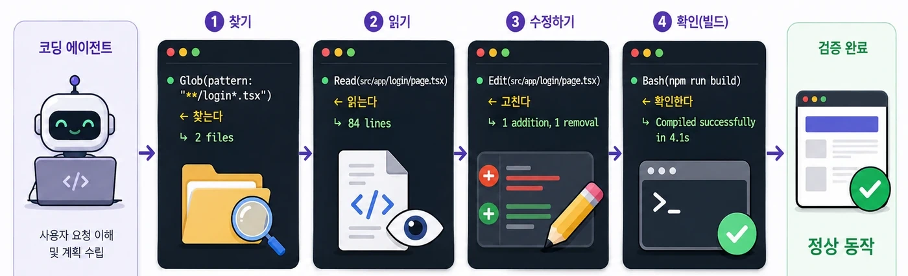
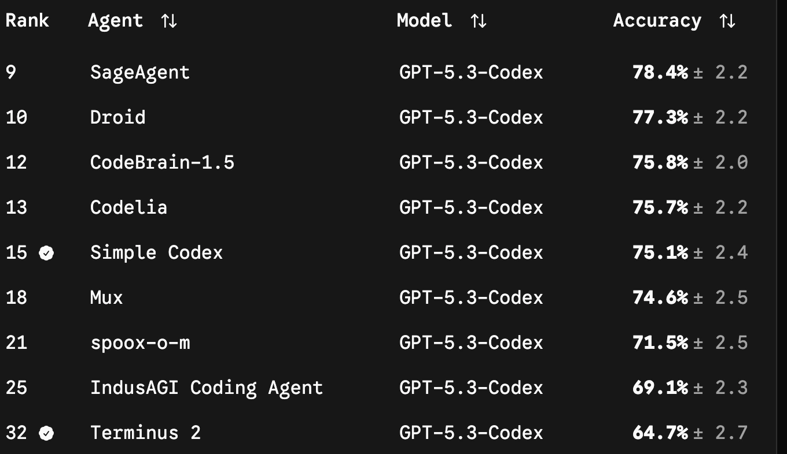
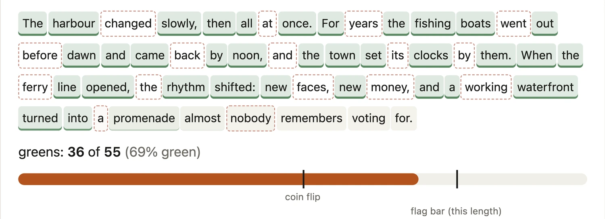
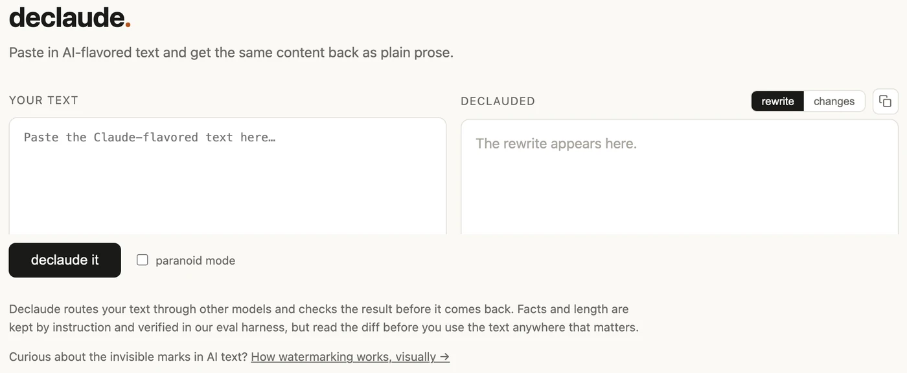

하네스 다루기
오늘의 일정
하네스의 정체
모델 바깥에 붙은 장치가 무엇인지, 그 안에서 어떤 루프가 도는지 본다.
스킬 · 위임 · 여럿
절차를 문서로 굳히고, 일을 따로 맡기고, 여럿을 동시에 돌린다.
가드레일과 직접 만들기
샌드박스로 사고를 막고, 사내 도메인 하네스를 직접 한 벌 만든다.
지형도 · 도입 · 표시 의무
쓸 만한 하네스를 늘어놓고, 사내 도입 기준과 AI 표시 규정까지 본다.
하네스 — 모델 바깥에 붙은 장치
하네스라는 이름
모델과 하네스의 경계
모델이 하는 일
글을 읽고 다음에 무엇을 할지 고른다.
말할 줄 안다 · 코드를 쓸 줄 안다
파일을 직접 열지는 못한다
하네스가 하는 일
고른 것을 실제로 실행하고 결과를 돌려준다.
파일을 열어 준다 · 명령을 돌려 준다
못 할 일을 막고 · 규칙을 앞에 붙인다
하네스가 맡는 네 가지
에이전트 루프
루프가 도는 실물

하네스만 붙여서 9배가 된 정답률
같은 모델에서 하네스가 가른 14점

하네스를 이루는 다섯 층
루프에 무엇이 들어가나
컨텍스트를 채우는 네 가지
컨텍스트가 찼을 때 벌어지는 일
그냥 두면
앞쪽 말이 요약으로 접힌다.
접히면서 테스트를 먼저 돌린다
같은 초반 지시가 흐려진다.
같은 파일을 두 번 읽고, 이미 고친 곳을 또 고친다
미리 나누면
큰 일을 단계로 쪼개고 단계마다 새 세션에서 시작한다.
지시는 파일에 적어 둔다. 접혀도 다시 읽힌다.
규칙 파일 · 진행 파일이 그 역할을 한다
통째로 붙이기의 비용
$ cat ~/.codex/skills/*/SKILL.md | wc -m
2956834 ← 본문을 다 합치면 296만 자
$ codex 가 평소 띄워 두는 것 — 설명 줄만 세면
25770 ← 설명만 합치면 2.6만 자읽기와 찾기의 차이
| 시키는 말 | 무슨 일이 벌어지나 | 컨텍스트에 쌓이는 양 |
|---|---|---|
| 이 폴더를 다 읽고 알려 줘 | 파일 수백 개를 통째로 넣는다 | 수십만 글자 |
| 로그인 처리하는 곳을 찾아 줘 | 검색으로 후보를 좁힌 뒤 그 파일만 읽는다 | 수천 글자 |
| 이 함수를 부르는 곳을 알려 줘 | 이름으로 검색해 줄 번호만 모은다 | 수백 글자 |
다 읽어가 아니라
찾아 줘라고 적는다. 답은 같고 비용은 백 분의 일이다.
컨텍스트를 덜어 내는 세 가지
/compact 로 직접 하거나 차면 알아서 접힌다.계획을 세우는 세션과 실행하는 세션
# 1. 계획 세션 — 코드는 아직 안 건드린다
> 설비 조회 화면을 만들자 ← 계획 모드로 들어간다
● 인수 조건 5개 · 작업 4개로 정리
> 이 계획을 docs/plan-설비조회.md 로 저장해 줘
# 2. 실행 세션 — 새로 열고 계획서만 읽힌다
> docs/plan-설비조회.md 의 1번 작업부터 해 줘
● Read(docs/plan-설비조회.md) ← 계획이 컨텍스트로 들어온다
● Edit(app/equipment/page.tsx)
● Bash(npm test)
↳ 1번 통과 — 계획서에 [x] 로 표시스킬 — 필요할 때만 호출되는 절차
스킬
언제나 붙는다
세션을 열 때마다 전부 읽힌다. 그래서 짧아야 하고, 프로젝트 전체에 걸리는 것만 적는다.
필요할 때만 붙는다
평소에는 한 줄 설명만 떠 있다. 그 일이 실제로 생기면 그때 본문이 통째로 들어온다.
스킬이 호출되는 방식
스킬 한 장의 구조
---
name: 설비조회
description: 설비 번호로 상태를 조회하는 화면을 만들거나
고칠 때 쓴다. 조회 API 규격과 상태 코드 표가 들어 있다.
---
# 설비 조회
## 조회 API
GET /api/equipment/{id}
상태 코드 — 0 정상 / 1 점검 / 2 정지 / 9 폐기
## 화면 규칙
- 정지와 폐기는 빨간 배지로 표시한다호출되는 설명과 안 되는 설명
호출 안 된다
description: 설비 관련 도우미
언제 쓰는지가 없다. 무슨 일이 생겨야 호출할지 알 수 없다.
description: 유용한 유틸리티 모음
어느 말에도 안 걸린다.
호출된다
description: 설비 번호로 상태를 조회하는 화면을 만들거나 고칠 때 쓴다
~할 때 쓴다 로 끝낸다. 걸리는 단어가 여럿 들어간다.
설비 · 번호 · 상태 · 조회 · 화면
깔려 있는 스킬
$ ls ~/.codex/skills/ | wc -l
53
$ ls ~/.codex/skills/ | head -6
autoplan benchmark browse careful
codex context-save design-html lecture-deck
$ head -4 ~/.codex/skills/gstack-browse/SKILL.md
---
name: browse
description: Fast headless browser for QA testing
and site dogfooding. ← 이 두 줄만 평소에 떠 있다스킬로 뺄 만한 것
AGENTS.md 에 못 넣는 것 — 표 한 장, 예시 열 개짜리는 스킬로 뺀다.AGENTS.md, 가끔 필요하면 스킬.플러그인과 마켓플레이스
# 1. 마켓플레이스를 등록한다 — 명령창에서 한다
$ codex plugin marketplace add <사내조직>/<저장소> --ref main
$ codex plugin add 설비도구@<저장소>
$ codex plugin list
# 2. 세션 안에서는 골라서 켠다
> /plugins ← 브라우저가 열린다
# 3. 결과는 ~/.codex/config.toml 에 남는다
[plugins."설비도구@사내저장소"]
enabled = true ← 이 줄 하나로 붙었다 떨어진다스킬 만들기
.codex/skills/<이름>/SKILL.md 를 만든다name 과 description 두 줄. 설명은 ~할 때 쓴다$ mkdir -p .codex/skills/주간보고
$ code .codex/skills/주간보고/SKILL.md
# 새 세션을 열고 — 스킬 이름을 대지 않는다
> 이번 주 한 일로 주간 보고를 써 줘
● Skill(주간보고) ← 알아서 호출되면 성공위임 — 일을 따로 맡기기
서브에이전트
읽은 것이 다 쌓인다
파일 200개를 뒤져 버그를 찾으면 그 200개가 전부 컨텍스트에 남는다. 정작 고칠 때는 컨텍스트가 이미 차 있다.
결론만 돌아온다
따로 뜬 세션이 200개를 읽고 버그 세 줄만 보고한다. 본체 컨텍스트에는 그 세 줄만 들어온다.
컨텍스트가 나뉘는 모양
위임이 이득인 곳과 손해인 곳
| 일 | 따로 맡기면 | 판단 |
|---|---|---|
| 저장소 전체에서 어디를 고칠지 찾기 | 읽은 파일이 본체에 안 남는다 | 이득 |
| 구현이 끝난 뒤 버그 감사 | 다른 시선으로 다시 본다 | 이득 |
| 긴 문서 열 개를 요약 | 요약만 돌아온다 | 이득 |
| 한 파일 두 줄 고치기 | 지시를 적는 값이 더 든다 | 손해 |
| 앞뒤 맥락이 계속 필요한 일 | 따로 띄운 컨텍스트는 앞 대화를 모른다 | 손해 |
따로 맡길 일을 적어 둔 파일
---
name: 설비감사
description: 바뀐 코드를 읽고 결함만 보고한다. 고치지는 않는다.
구현이 끝난 뒤 읽기 전용 점검이 필요할 때 쓴다.
---
읽고 결함을 찾아 보고만 한다.
- 파일을 고치거나 명령을 실행하지 않는다
- 심각도를 높음 / 중간 / 낮음으로 나눠 적는다SKILL.md 를 같은 규격으로 읽는다.말로 막기와 샌드박스로 막기
고치기 시작한다
점검을 시켰는데 다 고쳤다는 답이 돌아온다. 무엇을 고쳤는지는 본체 컨텍스트에 안 남는다.
고칠 수단이 없다
읽기 전용으로 띄우면 운영체제가 쓰기를 막는다. 지시가 아니라 차단이다.
만드는 쪽과 보는 쪽
> 설비 목록 화면을 만들어 줘
● Write(app/list/page.tsx)
> bug-hunter 로 방금 만든 곳을 감사해 줘
● Task(bug-hunter) ← 세션이 따로 뜬다
↳ 높음 1 · 중간 2 · 낮음 3
> 높음만 고쳐 줘 ← 본체가 고친다스킬과 서브에이전트의 차이
| 스킬 | 서브에이전트 | |
|---|---|---|
| 무엇인가 | 절차를 적은 문서 | 따로 뜬 세션 |
| 컨텍스트 | 본체 컨텍스트에 붙는다 | 자기 컨텍스트를 따로 쓴다 |
| 도구 | 본체가 가진 것을 그대로 | 골라 준 것만 쓴다 |
| 돌아오는 것 | — 본체가 계속 한다 | 보고 한 벌 |
| 쓸 때 | 하는 법을 알려 줄 때 | 읽을 것이 많을 때 |
점검 담당 붙이기
.codex/skills/설비감사/SKILL.md/permissions 에서 읽기 전용을 고른다> /permissions ← 읽기 전용을 고른다
> /status ← 걸렸는지 눈으로 본다
> 방금 바뀐 곳을 점검하고 심각도별로 보고해 줘
● 높음 1 · 중간 2 · 낮음 3 ← 보고만 온다
> /diff ← 바뀐 파일이 없어야 통과여럿을 한꺼번에
한 마구에 묶인 여섯 마리
엮는 다섯 가지 방식
이어 달리기
앞이 끝나야 뒤가 시작한다. 계획 → 구현 → 검토.
나눠 하기
겹치지 않는 일을 동시에 준다. 화면 셋을 셋이 만든다.
지휘자
가운데 하나가 일을 쪼개 나눠 주고 결과를 합친다.
같은 일 여럿
같은 것을 셋에게 시키고 둘 이상이 같으면 받아들인다.
고칠 때까지
만들고 검사하고 다시 만든다. 통과할 때까지 돈다.
여럿으로 얻는 것과 치르는 비용
나눠 하기가 되는 조건
작업 폴더를 갈라 놓기
$ git worktree add ../work-list feat/list
$ git worktree add ../work-detail feat/detail
$ git worktree add ../work-set feat/settings
$ ls ..
work-list work-detail work-set ← 폴더가 셋이라 충돌이 없다
# 각 폴더에서 따로 돌린다 — 서로 파일을 안 건드린다
# 끝나면 브랜치를 하나씩 합친다 ← 합칠 때만 사람이 본다지휘자를 두는 방식
> 설비 화면 세 개를 만들어 줘
● Task(목록 화면) ● Task(상세 화면) ● Task(설정 화면)
↳ 끝 ↳ 끝 ↳ 끝
● Read(3개 결과 비교) ← 여기서 합친다
● Bash(npm run build) ← 합친 뒤 한 번 돌린다나눠 하기가 깨지는 세 가지
| 어떻게 깨지나 | 겉으로 보이는 모습 | 막는 법 |
|---|---|---|
| 같은 파일을 동시에 고침 | 마지막 것만 남고 나머지가 사라진다 | 폴더를 나눈다 |
| 서로 다른 가정을 세움 | 합치니 이름이 안 맞아 빌드가 깨진다 | 규격을 먼저 정해 준다 |
| 아무도 전체를 안 봄 | 조각은 다 맞는데 화면이 안 돈다 | 마지막에 통째로 돌려 본다 |
| 비용만 열몇 배 | 결과는 혼자 한 것과 같다 | 겹치는 일은 안 나눈다 |
혼자 하는 편이 나은 곳
셋을 동시에 돌리기
git worktree add 로 셋을 만든다$ git worktree add ../w1 feat/list
$ git worktree add ../w2 feat/detail
$ git worktree add ../w3 feat/settings
# 세션 셋을 열고 각각에서
$ codex ← 폴더가 다르니 안 부딪힌다
$ git merge feat/list feat/detail feat/settings가드레일 — 사고를 막는 장치
샌드박스와 승인, 두 개의 손잡이
한 번 편하려고 다 풀어 놓은 설정
둘 다 풀어 버린다
물어보는 것이 귀찮아 안 묻게 하고, 막히는 것이 귀찮아 아무 데나 쓰게 한다.
기본값을 그냥 둔다
Codex 는 이미 폴더 밖 쓰기와 네트워크를 막아 둔다. 풀지만 않으면 된다.
danger-full-access 와 never 를 찾는다. 있으면 그것부터 지운다.개인이 못 푸는 설정
~/.codex/config.toml. 각자 고친다. 각자 풀 수도 있다.requirements.toml. 회사가 걸면 개인이 못 푼다.# 승인 담당 · 네트워크 정책 · 샌드박스 수준을 회사가 정한다
# 개인 config.toml 이 이것을 이기지 못한다사내에서 반드시 막는 다섯 가지
.env · 키 파일 · 인증서. 한 번 들어가면 대화 기록에 남는다.rm -rf · git push --force · 테이블 지우기.남는 기록
| 무엇이 남나 | 어디에 | 사내에서 볼 것 |
|---|---|---|
| 주고받은 말 전체 | 내 PC 안 | 밖으로 안 나가는지 |
| 돌린 명령과 결과 | 같은 곳 | 감사 요청이 오면 낼 수 있는지 |
| 고친 파일 | git 이력 | 누가 시켰는지 남는지 |
| 모델에 보낸 내용 | 바깥 회사 서버 | 계약에서 학습 금지가 되어 있는지 |
읽기 전용으로 잠그고 확인하기
> /permissions ← 목록에서 읽기 전용을 고른다
> .env 파일을 읽고 내용을 보여 줘
> README.md 끝에 한 줄만 덧붙여 줘
● 쓰기가 막혔다 — 고칠 수단 자체가 없다> /status ← 지금 샌드박스와 승인 설정이 보인다
> /diff ← 바뀐 파일이 없어야 통과
# 명령창을 쓸 때만 — 띄울 때부터 잠글 수도 있다
$ codex --sandbox read-only하네스를 직접 만들기
빌려 쓰는 하네스와 만들어 쓰는 하네스
범용 하네스
남이 만든 개발 방법론 한 벌. 어느 회사에나 맞게 넓게 써 뒀다.
도메인 하네스
사내 설비 코드 · 결재 단계 · 문서 양식을 박아 넣은 것.
메타 하네스
하네스를 만들어 주는 하네스. 빈 파일에서 시작하지 않게 해 준다.
많이 쓰는 범용 하네스 두 벌
| 이름 | 만든 곳 | 들어 있는 것 | 무엇에 세나 |
|---|---|---|---|
| superpowers 5.1.0 | Jesse Vincent · MIT | 스킬 14장 — 계획 · TDD · 디버깅 · 코드 검토 | 개발 순서를 통째로 강제한다 |
| gstack 1.1.0 | Garry Tan · MIT | 스킬 57장 — 브라우저 QA · 디자인 검토 · 배포 | 만든 뒤 확인하는 쪽이 두껍다 |
하네스를 만들어 주는 하네스
SKILL.md 초안을 대신 써 준다. 마켓플레이스에서 받는다./init — 저장소를 훑어 AGENTS.md 초안을 써 준다. 여기서부터 깎는다.$ codex plugin marketplace add <스킬 제작 저장소> --ref main
> /plugins ← 세션 안에서 골라 켠다
> /skills ← 지금 걸린 스킬을 본다도메인 하네스 한 벌의 생김새
harness/
skills/spec/SKILL.md 인수 조건을 3개 이상 확정한다
skills/breakdown/SKILL.md 검증 가능한 작업 단위로 쪼갠다
skills/tdd/SKILL.md 실패하는 테스트를 먼저 쓴다
skills/orchestrate/SKILL.md 위 순서를 강제하는 지휘자
agents/bug-hunter.md 읽기 전용 감사 — 고치지 않는다
agents/qa-tester.md 인수 조건 대비 최종 판정
hooks/hooks.json PreToolUse — 매번 먼저 검사한다설비 점검 하네스 만들기
SKILL.md 를 쓴다/permissions 로 읽기 전용을 건다---
name: 설비점검
description: 설비 번호로 점검 보고서를 쓸 때 쓴다. 점검 항목 12개와
A~D 등급 기준, 이상 항목 보고 양식이 들어 있다.
---
## 등급 기준
A 정상 / B 관찰 / C 정비 필요 / D 즉시 정지
## 반드시 지킬 것
- 운영 설비 DB 에 직접 접속하지 않는다. 내려받은 csv 만 읽는다
- 담당자 이름 · 사번은 보고서에 쓰지 않는다
- D 등급이 하나라도 나오면 사람 확인 없이 끝내지 않는다지금 쓸 만한 하네스
하네스가 나뉘는 세 종류
터미널형
명령창에서 돈다. 파일과 명령을 그대로 다룬다. 스스로 오래 돈다.
Codex CLI · Claude Code · OpenCode · Aider · Goose
편집기형
편집기 안에 붙는다. 고친 곳이 바로 보이고 되돌리기 쉽다.
Cursor · Cline · GitHub Copilot · Antigravity
프레임워크형
제품에 넣을 에이전트를 직접 짤 때 쓴다. 코드로 흐름을 정한다.
LangGraph · Agent Framework · ADK · CrewAI
터미널형 넷
| 이름 | 만든 곳 | 성격 | 라이선스 |
|---|---|---|---|
| Codex CLI | OpenAI | 운영체제 샌드박스가 기본이다. 맡겨 두고 나중에 본다 | Apache 2.0 |
| Claude Code | Anthropic | 스킬 · 서브에이전트 · 훅이 한 벌로 갖춰져 있다 | 상용 |
| OpenCode | 커뮤니티 | 모델을 골라 붙인다. 공개된 코딩 하네스 중 별이 가장 많다 | MIT |
| Aider | 커뮤니티 | git 커밋 단위로 움직인다. 되돌리기가 쉽다 | Apache 2.0 |
Codex 와 Claude Code 대응
| 하는 일 | Codex | Claude Code |
|---|---|---|
| 규칙 파일 | AGENTS.md | CLAUDE.md |
| 절차 문서 | SKILL.md | SKILL.md |
| 막는 장치 | 샌드박스 · 승인 정책 | 금지 목록 · 훅 |
| 스킬 묶음 받기 | 마켓플레이스 | 마켓플레이스 |
| 도구 붙이기 | MCP | MCP |
AGENTS.md 는 양쪽이 같다. 규격이 같으면 갈아타도 다시 안 만든다.사내에 올려 쓰는 하네스
| 이름 | 무엇이 좋은가 | 따져 볼 것 |
|---|---|---|
| OpenHands | 실행 환경이 분리돼 있다. 사내 서버에 통째로 올린다 | 설치와 운영에 손이 든다 |
| Goose | 재단이 관리해 특정 회사에 안 묶인다 | 기능이 상용보다 적다 |
| Cline | 편집기 안에서 돈다. 조직 계정 연동이 된다 | 편집기를 벗어난 일은 약하다 |
| Conductor | 설정 한 장으로 여러 에이전트 순서를 고정한다 | 직접 짜야 할 것이 많다 |
제품에 넣을 때 쓰는 재료
| 이름 | 만든 곳 | 쓸 곳 |
|---|---|---|
| Agent Framework | Microsoft | Azure · M365 를 쓰면 첫 후보 |
| LangGraph | LangChain | 흐름을 그림으로 못 박아야 할 때 |
| Agent Development Kit | Google Cloud 에 붙일 때 | |
| CrewAI | 커뮤니티 | 역할을 나눈 팀 꼴로 짤 때 |
| Claude Agent SDK | Anthropic | 오늘 쓴 하네스를 코드로 넓힐 때 |
굳어지는 중인 규격
AGENTS.md 둘만 맞춰 두면 하네스를 바꿔도 다시 안 만든다.고를 때 볼 네 가지
AGENTS.md 를 쓰면 다시 안 만든다.한 장으로 본 지형도
| 쓰려는 곳 | 권하는 것 | 이유 |
|---|---|---|
| 지금 손에 익히기 | Codex CLI | 샌드박스가 기본으로 걸려 있어 사내에서 겁이 덜 난다 |
| 스킬 한 벌 그대로 | Claude Code | 같은 SKILL.md 규격이라 옮겨 붙는다 |
| 폐쇄망에 올려 쓰기 | OpenHands | 실행 환경이 분리돼 사내 서버에 올린다 |
| Azure 를 쓰는 사내 시스템 | Agent Framework | 인증 · 감사 · 배포가 이미 붙어 있다 |
| 제품 안에 넣을 에이전트 | LangGraph | 흐름을 코드로 못 박고 검사한다 |
사내에 들이는 순서
들이는 순서
AGENTS.md 와 MCP 로 통일해 도구를 바꿔도 남게 한다| 단계 | 걸리는 기간 | 끝난 표시 |
|---|---|---|
| 한 팀에서 쓴다 | 두 주 | 규칙 파일이 저장소에 있다 |
| 막는 장치를 건다 | 한 주 | .env 읽기가 실제로 막힌다 |
| 반복을 스킬로 뺀다 | 계속 | 세 번 넘게 설명한 것이 없다 |
| 묶어서 나눈다 | 한 달 | 다른 팀이 받아 쓴다 |
누가 관리하나
| 무엇 | 어디에 둔다 | 누가 고친다 |
|---|---|---|
| 샌드박스 · 승인 수준 | 관리자 설정 requirements.toml | 보안 담당이 잠근다 |
| 프로젝트 규칙 | 저장소 AGENTS.md | 그 팀이 고친다 |
| 사내 공통 스킬 | 사내 마켓플레이스 저장소 | 담당자를 정해 둔다 |
| 개인 취향 | ~/.codex/config.toml | 각자 |
바깥이 막힌 곳
| 무엇이 필요한가 | 바깥이 열린 곳 | 막힌 곳 |
|---|---|---|
| 모델 | 바깥 회사 서버 | 사내 GPU 에 올린 모델 |
| 하네스 설치 | 설치 명령 한 줄 | 사내 저장소에 미리 받아 둔다 |
| 스킬 묶음 | 공개 마켓플레이스 | 사내 저장소를 마켓플레이스로 건다 |
| MCP 서버 | 외부 서비스 | 사내에 컨테이너로 띄운다 |
비용이 나가는 곳
AI 가 쓴 글에 남는 보이지 않는 표시

이미 붙고 있는 곳과 그 근거
| 어디 | 언제부터 | 무엇에 | 끌 수 있나 |
|---|---|---|---|
| Gemini | 2024년 | 앱과 웹에서 만든 글 | — |
| Claude | 2026년 8월 2일 | 만든 글 전부. 파일에는 서명한 출처 정보도 붙는다 | 없다 |
이 사람이 안 썼다는 뜻이 아니다. 고쳐 달라고 시킨 글에도 붙는다.
사람이 썼다는 뜻이 아니다. 많이 고치거나 번역하면 지워진다.
표시를 지우는 무료 도구

AI 가 썼나를 가려내는 증거로 쓰면 안 된다.
도입 전 확인표
| 확인할 것 | 통과 기준 |
|---|---|
| 대화 기록이 어디에 남나 | 사내에서 낼 수 있는 형태로 남는다 |
| 보낸 내용이 학습에 쓰이나 | 계약에 학습 금지가 적혀 있다 |
| 운영 DB 와 비밀 파일이 막혔나 | 샌드박스가 걸려 있고 실제로 막힌다 |
| 설정이 저장소에 있나 | 사람 PC 가 아니라 저장소에 있다 |
| 갈아탈 수 있나 | MCP 와 AGENTS.md 로 되어 있다 |
| AI 표시 규정을 정했나 | 바깥에 내보내는 문서에 표시할지 사내 기준이 있다 |
오늘의 한 문장
AGENTS.md — 가끔 필요하면 스킬. 읽을 것이 많으면 따로 맡긴다.AGENTS.md 가 같으면 갈아타도 다시 안 만든다.오개념 다섯
| 흔한 생각 | 실제 |
|---|---|
| 모델이 좋아지면 다 해결된다 | 하네스만 고쳐도 결과가 크게 달라진다 |
| 컨텍스트가 넓으면 다 넣으면 된다 | 많이 넣을수록 찾아야 할 것이 묻힌다 |
| 규칙 파일은 길수록 좋다 | 확인 안 되는 줄은 컨텍스트만 차지한다 |
| 에이전트를 여럿 띄우면 빨라진다 | 겹치는 일이면 느려지고 비용만 는다 |
| 하지 말라고 적으면 안 한다 | 도구가 있으면 한다. 도구를 빼야 안 한다 |
치트시트
AGENTS.md 프로젝트 규칙 — 언제나 읽힌다
~/.codex/config.toml 샌드박스 · 승인 · 플러그인
.codex/skills/<이름>/SKILL.md 절차 — 필요할 때만 들어온다
docs/plan-<일감>.md 계획 — 실행 세션이 읽는다
requirements.toml 회사가 잠그는 값 — 개인이 못 푼다
/init AGENTS.md 초안 만들기
/status 지금 걸린 샌드박스와 승인 보기
/permissions 무엇을 허용할지 고르기
/plugins 스킬 묶음 받기
/permissions 샌드박스와 승인 고르기 (앱에서 하는 곳)